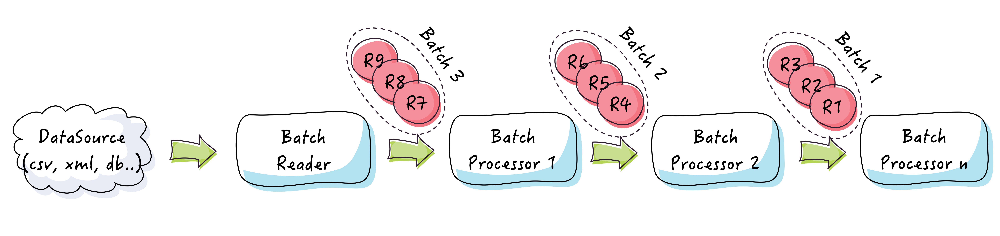

Components Reference
Reading records
To read records from a data source, you should register an implementation of the RecordReader interface:
Job job = new JobBuilder()
.reader(new MyRecordReader(myDataSource))
.build();There are several built-in record readers to read data from a variety of sources:
- flat files (delimited and fixed length)
- xml and json files
- MS Excel files
- in-memory strings
- databases
- JMS queues
- Queues and Iterable objects
- and standard input
Here is a table of built-in readers and how to use them:
| Data source | Reader | Record type | Module |
|---|---|---|---|
| String | StringRecordReader | StringRecord | easybatch-core |
| Directory | FileRecordReader | FileRecord | easybatch-core |
| Iterable | IterableRecordReader | GenericRecord | easybatch-core |
| Standard input | StandardInputRecordReader | StringRecord | easybatch-core |
| Flat file | FlatFileRecordReader | FlatFileRecord | easybatch-flatfile |
| Flat file | ApacheCommonCsvRecordReader | ApacheCommonCsvRecord | easybatch-apache-commons-csv |
| MS Excel file | MsExcelRecordReader | MsExcelRecord | easybatch-msexcel |
| Xml stream | XmlRecordReader | XmlRecord | easybatch-xml |
| Json stream | JsonRecordReader | JsonRecord | easybatch-json |
| Relational database | JdbcRecordReader | JdbcRecord | easybatch-jdbc |
| Relational database | JpaRecordReader | GenericRecord | easybatch-jpa |
| Relational database | HibernateRecordReader | GenericRecord | easybatch-hibernate |
| MongoDB | MongoDBRecordReader | MongoDBRecord | easybatch-mongodb |
| BlockingQueue | BlockingQueueRecordReader | GenericRecord | easybatch-core |
| JmsQueue | JmsQueueRecordReader | JmsRecord | easybatch-jms |
Reading batches
To read records in batches, you need to use a BatchReader.
Batch readers must be configured with a data source and the batch size.
They delegate data reading to regular record readers and produce Batch instances with a list of records as payload.
Please refer to the JavaDoc of batch readers for more details about how to use them.
Considerations, hints and gotchas
1. Hint: How to handle data reading failure?
Sometimes, the data source may be temporarily unavailable. In this case, the record reader will fail to read data and the job will be aborted. You can make the reader retry reading data using a RetryPolicy.
Job job = new JobBuilder()
.reader(new MyRecordReader(unreliableDataSource), new RetryPolicy(5, 1, SECONDS))
.build();This will make the reader retries at most 5 times waiting one second between each attempt. If after 5 attempts the data source is still unreachable, the job will be aborted.
2. Hint:
if your XML file in flattened (with no wrapping tag), let's say in this format:
<tweet><id>2</id><user>bar</user><message>Hi</message></tweet>
...
you can use the FlatFileRecordReader that will read XML records line by line.
3. Heads up!
The JsonRecordReader expects an array of JSON objects in the input file: [ {object1}, {object2}, ..., {objectN} ] .
if your JSON file in flattened (no wrapping array), let's say in this format:
{object2}
...
you can use the FlatFileRecordReader that will read JSON records line by line.
4. Performance note:
Depending on your JDBC driver configuration, The JdbcRecordReader can (and should) stream records in chunks.
You can set the maxRows and fetchSize parameters of the JdbcRecordReader
to make sure large data sets are not loaded entirely in memory:
- Oracle driver streams data by default (with a fetch size of 10 by default)
- MySql driver does not stream records by default, you need to set the fetch size to
Integer.MIN_VALUEin order to make it stream records. - Postgresql driver does not stream records by default, you need to set auto commit to false and set the fetch size according to your needs.
- For other databases, please refer to the documentation of the JDBC driver you use.
5. Performance note:
The JpaRecordReader loads all data fetched by the JPQL query into a java.util.List object.
You should pay attention to large data sets with the JPQL query you specify to the JpaRecordReader. You can specify the maximum number of rows
to fetch using the maxResults parameter of the JpaRecordReader.
6. Performance note:
The HibernateRecordReader uses the org.hibernate.ScrollableResults behind the scene to stream records in chunks.
You can specify the fetch size and the maximum rows to fetch using the fetchSize and maxResult parameters.
Record writers
A RecordWriter is a record processor that writes records to a data sink.
Easy Batch comes with common record writers to write data to a variety of data sinks:
- Databases
- Files
- JMS queues
- The standard output
- etc
Heads up!
Record writers are regular processors and are part of the processing pipeline.
All record writers write the payload of the record to the data sink.
Easy Batch does not open/close the data sink, you need
to use a JobListener to open/close the data sink if any.
Here is a table of built-in writers and how to use them:
| Data sink | Writer | Module |
|---|---|---|
| Output stream | OutputStreamRecordWriter | easybatch-core |
| Standard output | StandardOutputRecordWriter | easybatch-core |
| File | FileRecordWriter | easybatch-core |
| MsExcel File | MsExcelRecordWriter | easybatch-msexcel |
| String | StringRecordWriter | easybatch-core |
| Collection | CollectionRecordWriter | easybatch-core |
| Relational database | JdbcRecordWriter | easybatch-jdbc |
| Relational database | JpaRecordWriter | easybatch-jpa |
| Relational database | HibernateRecordWriter | easybatch-hibernate |
| NoSQL database | MongoDBRecordWriter | easybatch-mongodb |
| Jms Queue | JmsQueueRecordWriter | easybatch-jms |
| BlockingQueue | BlockingQueueRecordWriter | easybatch-core |
Batch writers
A BatchWriter is a record processor that writes batches to a data sink. BatchWriters
allow you to get better performance with batch inserts. Here is an example of how to write a records in batches in a Collection:
List<String> dataSource = Arrays.asList("foo", "bar", "baz", "toto", "titi");
List<String> dataSink = new ArrayList<>();
JobBuilder.aNewJob()
.reader(new IterableBatchReader(dataSource, 2))
.writer(new CollectionBatchWriter(dataSink))
.call();In this example, the job will read records from the dataSource in batches of 2 and writes them back to the dataSink also in batches of 2.
Considerations, hints and gotchas
1. Performance note:
The JdbcRecordWriter does not deal with database transactions, it simply writes the record to the database.
By default, the sql connection is in autocommit mode. This results in a transaction being started and committed for each record which may lead to a performance issue for large data sets.
In order to commit a transaction per batch of records, you can disable the autocommit mode and register a JdbcTransactionListener.
You can find a complete tutorial on how to use the JdbcRecordWriter here.
2. Hint:
The JpaRecordWriter expects a Java object as input and not a Record. Make sure to map records to your domain object type
before passing them to the JpaRecordWriter.
The JpaRecordWriter does not deal with database transactions, it simply persists the record without flushing the persistence context.
In order to commit a transaction and flush the persistence context, you need to register a JpaTransactionListener. This listener
will begin and commit or rollback a transaction for every record (or batch of records).
3. Hint:
The HibernateRecordWriter expects a Java object as input and not a Record. Make sure to map records to your domain object type
before passing them to the HibernateRecordWriter.
This writer does not deal with database transactions and you need to use a HibernateTransactionListener in order to commit a transaction
after each batch of written records.
You can find a complete tutorial on how to use the HibernateRecordWriter here.
Filtering records
You can filter records using a RecordFilter.
This interface allows you to skip next stages of the pipeline if the record satisfies a given predicate. Typical examples are:
- filter comment records (those beginning with # for example) in a flat file
- filter log files (with extension .log) when processing a set of files in a directory
- etc
To register a record filter, you can use the JobBuilder API as follows:
Job job = new JobBuilder()
.filter(new myRecordFilter())
.build();You can register as many filters as you want anywhere in the pipeline. The engine will skip next stages of the pipeline for each filtered record. There are several built-in implementations for commonly used filters:
| Filter | Record type | Module | Description |
|---|---|---|---|
| EmptyRecordFilter | StringRecord | easybatch-core | Filter String records with empty payload |
| StartWithStringRecordFilter | StringRecord | easybatch-core | Filter String records starting with a given suffix |
| EndWithStringRecordFilter | StringRecord | easybatch-core | Filter String records ending with a given suffix |
| GrepFilter | StringRecord | easybatch-core | Keep String records containing the given pattern |
| HeaderRecordFilter | Record | easybatch-core | Filter the header record (first record in the data source) |
| RecordNumberEqualToFilter | Record | easybatch-core | Filter records based on their number |
| RecordNumberBetweenFilter | Record | easybatch-core | Filter records if their number is inside a given range. |
| RecordNumberGreaterThanFilter | Record | easybatch-core | Filters records if their number is greater than a given number |
| RecordNumberLowerThanFilter | Record | easybatch-core | Filters records if their number is lower than a given number |
| FileExtensionFilter | FileRecord | easybatch-core | Filter File records having a file name ending with a given extension |
| JmsPoisonRecordFilter | JmsPoisonMessage | easybatch-jms | Filter JMS poison records |
| PoisonRecordFilter | PoisonRecord | easybatch-core | Filter poison records |
Filtering batches
The BatchFilter API allows you to filter records from a batch of records using a RecordFilter.
Let's see an example. Here is a flat file containing some tweets:
tweets.csv
id,user,message
1,foo,easy batch rocks! #EasyBatch
2,bar,@foo I do confirm :-)
3,baz,@foo @bar really?
You would like to process tweets in batches of 2 and filter the header record. Here is how to do that:
File tweets = new File("tweets.csv");
Job job = JobBuilder.aNewJob()
.reader(new FlatFileBatchReader(tweets, 2))
.filter(new BatchFilter(new HeaderRecordFilter())
.build();With this setup, you will get a first batch containing only record N°1 (the header record will be filtered) and a second batch containing records N°2 and N°3.
Without the BatchFilter, the first batch would contain 2 records: the header record and record N°1.
Mapping records to domain objects
Easy Batch development is POJO-centric and has been designed with the idea that input records should be projected in the object oriented world and not used in their original raw format.
It is the RecordMapper that lets you map input records to your domain objects.
You can register an implementation of the RecordMapper interface as follows:
Job job = new JobBuilder()
.mapper(new MyRecordMapper())
.build();There are several built-in record mappers to map records from a variety of data formats:
| Record mapper | Expected record type | Module | Description |
|---|---|---|---|
| DelimitedRecordMapper | StringRecord | easybatch-flatfile | Map delimited-values records to Java objects |
| FixedLengthRecordMapper | StringRecord | easybatch-flatfile | Map fixed-length field records to Java objects |
| ApacheCommonCsvRecordMapper | ApacheCommonCsvRecord | easybatch-apache-common-csv | Map delimited-values records to Java objects |
| OpenCsvRecordMapper | StringRecord | easybatch-opencsv | Map delimited-values records to Java objects |
| XmlRecordMapper | XmlRecord | easybatch-xml | Map xml records to Java objects annotated with JAXB annotations |
| XstreamRecordMapper | XmlRecord | easybatch-xstream | Map xml records to Java objects using XStream |
| JacksonRecordMapper | JsonRecord | easybatch-jackson | Map json records to Java objects using Jackson |
| GsonRecordMapper | JsonRecord | easybatch-gson | Map json records to Java objects using Gson |
| JdbcRecordMapper | JdbcRecord | easybatch-jdbc | Map JDBC records to Java objects |
| SpringJdbcRecordMapper | JdbcRecord | easybatch-spring | Map json records to Java objects using Spring JDBC |
| MongoDBRecordMapper | MongoDBRecord | easybatch-mongodb | Map mongodb records to Java objects using Morphia |
| MsExcelRecordMapper | MsExcelRecord | easybatch-msexcel | Map MsExcel records to Java objects using Apache POI |
Heads up!
Record mappers take a Record, map it's payload to a domain object
and return another Record with the same header but with the domain object as payload.
Mapping batches
When you use a BatchReader, you get instances of the Batch class having a list of Record instances as payload.
If you want to map record in batches, you need to use a BatchMapper.
A BatchMapper maps a batch of records to domain objects using a delegate RecordMapper.
Considerations, hints and gotchas
1. Heads up!
Some record mappers (DelimitedRecordMapper, FixedLengthRecordMapper, ApacheCommonCsvRecordMapper and JdbcRecordMapper)
convert raw textual data to typed data in Java objects. Easy Batch supports all Java primitive and wrapper types.
If you want to provide a custom type converter, you can implement the org.easybatch.core.api.TypeConverter interface and register your implementation
within the record mapper in use.
2. Heads up!
If a delimited record is not well formed, the DelimitedRecordMapper throws an exception that causes the record to be rejected by the engine in the following cases:
- Fields number is not equal to the expected fields number (missing field, extra field, etc) as specified in the CSV RFC (section 2.4).
- A field is not qualified as expected with the data qualifier, which means that the
DelimitedRecordMapperexpects all fields to be qualified when a qualifier is specified.
The DelimitedRecordMapper is intended to cover basic requirements of delimited-values mapping.
It does not support detecting delimiters and line breaks in a qualified field.
If you need these features, you can use the ApacheCommonCsvRecordMapper or the OpenCsvRecordMapper.
3. Hint
If a fixed length record is not well formed, the FixedLengthRecordMapper throws an exception that causes the record to be rejected by the engine.
A fixed length record is not well formed if its length is not equal to expected record length.
4. Hint
When you create a XmlRecordMapper, you should specify your target domain object type.
If you need to validate Xml records against a Xsd schema, you can specify the schema at creation time as follows:
Job job = new JobBuilder()
.mapper(new XmlRecordMapper(MyPojoType.class, myXsdFile))
.build();5. Note
Easy Batch does not provide support for JSON mapping yet. The goal is to use the reference implementation of JSON-B. As of version 4.1.0, the reference implementation of JSON-B is not available yet. Built-in support for JSON mapping will be provided as soon as the reference implementation of JSON-B will become available.
Validating records
Validating input data is an essential step in every batch application.
With Easy Batch, you can validate records by registering one or more RecordValidator implementation as follows:
Job job = new JobBuilder()
.validator(new MyFirstRecordValidator())
.processor(new MyRecordProcessor())
.validator(new MySecondRecordValidator())
.build();The engine will reject the record on first validation error.
The BeanValidationRecordValidator is a built-in validator that uses the Bean Validation API
to validate your domain objects. In order to use this validator, you should proceed as follows:
1. Add maven dependency
Add the easybatch-validation module to your dependencies:
<dependency>
<groupId>org.easybatch</groupId>
<artifactId>easybatch-validation</artifactId>
<version>4.1.0</version>
</dependency>2. Declare validation constraints
In order to use the Bean Validation API with Easy Batch, you should add your constraints on your domain object with Bean Validation API annotations.
3. Register the validator
Finally, register the BeanValidationRecordValidator using the JobBuilder API:
Job job = new JobBuilder()
.validator(new BeanValidationRecordValidator<YourPojoType>())
.build();Easy Batch will then apply validation logic that you declared using annotations for each input record during the process.
Validating batches
The BatchValidator API allows you to validate a batch of records using a delegate RecordValidator.
A batch of records is valid if all its records are valid. A batch of records is invalid if one of its records is invalid.
Record marshallers
As you have seen in previous sections, Easy Batch development is POJO-based. It's highly recommended to use POJOs as a pivot model instead of manipulating raw data.
In many cases, we need to marshal a domain object to a target format (Xml, Json, Csv, etc). RecordMarshallers are record processors that marshal Java objects to a specific format.
Here is a table of built-in marshallers and how to use them:
| Marshaller | Module | Description |
|---|---|---|
| DelimitedRecordMarshaller | easybatch-flatfile | marshals a POJO to CSV format |
| FixedLengthRecordMarshaller | easybatch-flatfile | marshals a POJO to fixed-length format |
| ApacheCommonCsvRecordMarshaller | easybatch-apache-common-csv | marshals a POJO to CSV format using Apache commons CSV |
| DelimitedRecordMarshaller | easybatch-flatfile | marshals a POJO to CSV format |
| XmlRecordMarshaller | easybatch-xml | marshals a POJO annotated with javax.xml.bind.annotation.XmlRootElement to Xml format using Jaxb |
| XstreamRecordMarshaller | easybatch-xstream | marshals a POJO to Xml format using Xstream |
| GsonRecordMarshaller | easybatch-gson | marshals a POJO to Json format using Google's Gson |
| JacksonRecordMarshaller | easybatch-jackson | marshals a POJO to Json format using Jacskon |
| MsExcelRecordMarshaller | easybatch-msexcel | marshals a POJO to MsExcel row using Apache POI |
Heads up!
Built-in marshallers expect a GenericRecord having a Java object as payload.
They produce StringRecord having String representation of the marshalled objects.
Batch marshallers
The BatchMarshaller marshals a batch of records using a delegate RecordMarshaller.
You can find an example of how to use the BatchMarshaller API in batch processing tutorial.
Considerations, hints and gotchas
Heads up!
By default, the DelimitedRecordMarshaller, FixedLengthRecordMarshaller
and ApacheCommonCsvRecordMarshaller do not support recursive (deep) marshalling of POJOs.
In order to have more control over how to extract and format your domain object's fields,
you can implement the RecordFieldExtractor interface and supply your implementation at marshaller's construction time.
Record processing
Easy Batch lets you define processing logic through the RecordProcessor interface.
This is where you implement what to do for each record.
Records are submitted to a processing pipeline where each record is piped out from one processor to the next one:

Record type can change from one processor to another.
You can define as much processors as you want in the pipeline:
Job job = new JobBuilder()
.processor(myRecordProcessor1)
.processor(myRecordProcessor2)
.build();Easy Batch will call these processors in the order in which they are registered.
You can also do some computation on input records that will be returned at the end of execution.
This is the role of the ComputationalRecordProcessor API, that is, do some computation on inputs records.
Unlike RecordProcessors that are used for intermediate operations,
a ComputationalRecordProcessor is used for terminal operations, like aggregating results for instance.
Hence, it should be placed at the end of the pipeline. Easy Batch will call its getComputationResult
method to get the computation result at the end of execution so you can obtain this result from the job report as follows:
Job job = new JobBuilder()
.processor(myComputationalRecordProcessor)
.build();
JobReport report = job.call();
MyResultType myResult = (MyResultType) report.getResult();Batch processing
To read/process/write records in batches, you need to use BatchReaders / BatchProcessors / BatchWriters.
Those are regular RecordReaders / RecordProcessors / RecordWriters except they read/process/write Batches instead of Records:

You can find a complete tutorial about batch processing here.
The RecordDispatcher API
Easy Batch does not provide a feature to partition input data.
Instead of that, it comes with the RecordDispatcher abstraction that allows you to
dispatch records to multiple worker jobs.
There are 8 implementations of the RecordDispatcher interface and you can
provide a custom record dispatching strategy as well:
| Dispatcher | Module | Record | Queue | Description |
|---|---|---|---|---|
| RoundRobinRecordDispatcher | easybatch-core | Object | BlockingQueue | Dispatch records in round robin fashion |
| ContentBasedRecordDispatcher | easybatch-core | Object | BlockingQueue | Dispatch records based on their content |
| BroadcastRecordDispatcher | easybatch-core | Object | BlockingQueue | Broadcast records to several queues |
| RandomRecordDispatcher | easybatch-core | Object | BlockingQueue | Dispatch records randomly to one of the given queues |
| RoundRobinJmsRecordDispatcher | easybatch-jms | Message | Jms Queue | Dispatch Jms messages in round robin fashion |
| ContentBasedJmsRecordDispatcher | easybatch-jms | Message | Jms Queue | Dispatch Jms messages based on their content |
| BroadcastJmsRecordDispatcher | easybatch-jms | Message | Jms Queue | Broadcast Jms messages to several queues |
| RandomJmsRecordDispatcher | easybatch-jms | Message | Jms Queue | Dispatch Jms messages randomly to one of the given queues |
Heads up!
A record dispatcher is a regular RecordProcessor and can be used like any other processor in the processing pipeline.
Once a record has been dispatched to a java.util.concurrent.BlockingQueue / javax.jms.Queue,
it can be read from the queue using a BlockingQueueRecordReader / JmsQueueRecordReader.
You can find examples of how to use the RecordDispatcher API in these tutorials:
- Parallel processing tutorial
- Content based record dispatcher tutorial 1
- Content based record dispatcher tutorial 2
Considerations, hints and gotchas
1. Heads up!
You can dispatch almost every type of record with Easy Batch except JDBC records. A JdbcRecord has a java.sql.ResultSet as payload.
In a scenario where you have a master job that reads data from a relational database and dispatch them to workers,
the master job could have finished reading the data source and dispatched all records to worker queues, while workers are still processing
those records. Hence, the master job will close the database connection and the dispatched JDBC records are no more usable since their payload
depend on the connection that has been closed by the master job!
A solution to this problem is to:
- either use the
keepAliveparameter to keep the JDBC reader alive which will not close the connection - or make the master job map JDBC records to domain objects and dispatch those objects safely to workers
You should definitely consider using the second approach which is more elegant and efficient!
Listen to job events
Listeners allow you to plugin custom behavior in the workflow in a AOP style. You can register listeners to do pre/post processing before/after the entire job or a specific step.
There are two types of listeners:
- Job listener: This is a listener for global batch job events. Several use cases can be implemented using this listener:
- Setup/teardown resources before/after the job
- Lock/Unlock working directory at job start/stop
- Archive log files at the end of Job
- Send job report by email at the end of execution
- etc
- Step listeners: These are listeners bound to job steps. Here are some use cases:
- Define transaction boundaries in a transactional batch application
- Calculate the processing time for each record
- etc
Listeners are heavily used internally by Easy Batch to implement cross-cutting concerns (logging, auditing, transactions, monitoring, etc).
Job listener
To listen to job related events, you need to register an implementation of the JobListener interface:
public interface JobListener {
void beforeJobStart(JobParameters parameters);
void afterJobEnd(JobReport report);
}The next figure shows when each method of the JobListener is called in the processing workflow:
You can register a custom job listener using the JobBuilder API:
Job job = new JobBuilder()
.jobListener(new MyJobListener())
.build();Record reader listener
The RecordReaderListener allows you to get notified before/after reading each record:
public interface RecordReaderListener {
void beforeRecordReading();
void afterRecordReading(Record record);
void onRecordReadingException(final Throwable throwable);
}Here is when each method is called in the processing workflow:
You can register a custom record reader listener using the JobBuilder API:
Job job = new JobBuilder()
.readerListener(new MyReaderListener())
.build();Processing pipeline listener
The PipelineListener allows you to get notified before/after processing each record:
public interface PipelineListener {
Record beforeRecordProcessing(final Record record);
void afterRecordProcessing(final Record inputRecord, final Record outputRecord);
void onRecordProcessingException(final Record record, final Throwable throwable);
}Here is when each method is called in the processing workflow:
You can register a custom pipeline listener using the JobBuilder API:
Job job = new JobBuilder()
.pipelineListener(new MyPipelineListener())
.build();Built-in listeners
Here is a table of built-in listeners and how to use them:
| Listener | Type | Module | Description |
|---|---|---|---|
| JdbcTransactionListener | Pipeline listener | easybatch-jdbc | Start, commit/rollback a transaction for each record |
| JpaTransactionListener | Pipeline listener | easybatch-jpa | Start, commit/rollback a transaction for each record |
| HibernateTransactionListener | Pipeline listener | easybatch-hibernate | Start, commit/rollback a transaction for each record |
| RecordProcessingTimeListener | Pipeline listener | easybatch-core | Calculate the processing time for each record |
| JdbcConnectionListener | Job listener | easybatch-jdbc | Close a JDBC connection at the end of the job |
| JpaEntityManagerListener | Job listener | easybatch-jpa | Close a JPA entity manager at the end of the job |
| HibernateSessionListener | Job listener | easybatch-hibernate | Close a Hibernate session at the end of the job |
| PoisonRecordBroadcaster | Job listener | easybatch-core | Broadcast a PoisonRecord to a set of workers at the end of the job |
| JmsPoisonMessageBroadcaster | Job listener | easybatch-jms | Broadcast a JmsPoisonMessage to a set of workers at the end of the job |
| XmlWrapperTagWriter | Job listener | easybatch-core | Write a XML wrapper tag in a file before/after a job |
| JmsQueueSessionListener | Job listener | easybatch-jms | Close a Jms session at the end of job |
| JmsQueueConnectionListener | Job listener | easybatch-jms | Close a Jms connection at the end of job |